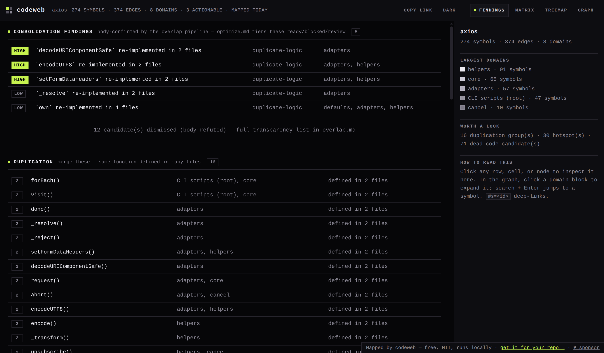
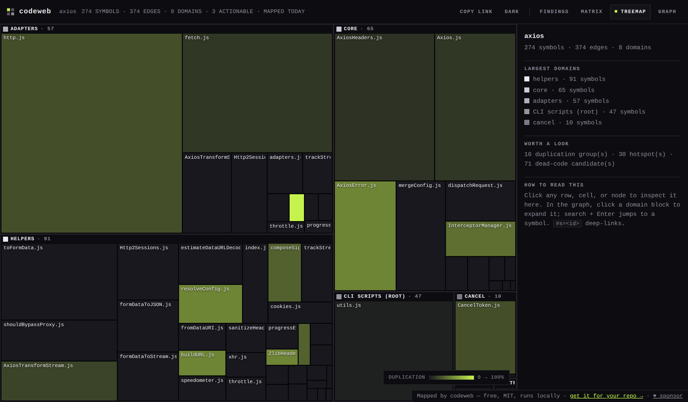
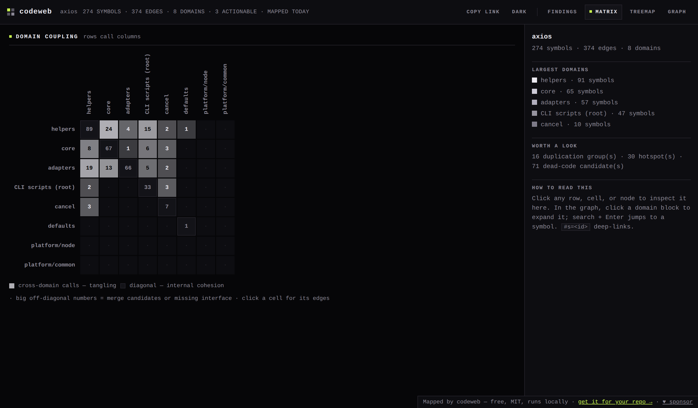

One graph. Twenty tools. Every phase of the edit loop.
codeweb turns a repository into a queryable structural graph, then exposes it as deterministic tools an agent calls at exactly the moment it needs them — before writing, while reviewing, and when optimizing.
The foundation — read the graph.
Before you add code — reuse, don't reinvent.
Assess impact and risk.
Act on findings — safely.
Close the edit loop.
Meta-analysis across snapshots and time.
All 20 tools are read-only. The one mutating operation — codeweb_codemod --write — is gated, reversible, and deliberately not exposed over MCP. Every tool has CLI/MCP parity, verified by JSON-RPC conformance tests.
Ten features across four tiers
From closing the holes in the agent edit loop (Tier 0) to the architectural scale track (Tier 3) — all deterministic, all zero-dependency, all tested.
- F1 · Scoped context — codeweb_context — a bounded edit window instead of grepping whole files.
- F2 · Live refresh — codeweb_refresh — incremental re-extract so queries reflect edits.
- F3 · Duplication-delta gate — review --before — fail the gate when a changed symbol becomes a body-confirmed duplicate.
- F4 · Hotspots — complexity × fan-in × churn — where to focus first.
- F5 · Campaign — One ordered, gated worklist of dead-code deletes, cycle cuts, and merges.
- F6 · Structural clones — Catch renamed (Type-2) clones via an identifier-normalized skeleton.
- F7 · Suppression memory — Fingerprinted false-positive suppression that a genuinely new issue can't hide behind.
- F8 · Reading order — A deterministic, foundations-first onboarding tour.
- F9 · Incremental edges — Per-file edge cache — byte-identical to a full extract, re-derived only for changed files.
- F10 · Sharded subgraphs — Answer queries from one shard + a boundary index, same result as the monolith.
Five languages, parse-free
The deterministic extractor emits atomic nodes and edges for these languages without a heavyweight parser. Everything else routes through an agent fallback that returns the same node/edge shape.
JavaScript TypeScript Python Rust Go Java C# Ruby PHP Kotlin Swift
Engine modes: hybrid (default — uses ctags/ripgrep when available, falls back to regex), tools, and read. Five-language extraction parity is a validated check in the study.
- graph.json — the machine-readable web (nodes, edges, domains, overlaps, meta).
- report.html — a self-contained interactive map (no CDN, no network).
- report.md / overlap.md — the same findings in plain markdown.
- optimize.md — consolidation advice tiered ready / blocked / review, each pre-flighted against the gate.
A report that earns trust by spending it carefully
Four views over the same graph — generated live from the axios codebase, not mocked up.

Findings — ranked duplication, hotspots, dead code.

Graph — the force-directed domain web.

Treemap — file LOC × duplication heat.

Matrix — cross-domain coupling.
A CI gate that fails the PR when an edit makes structure worse
The same regression verdict as codeweb_diff, run on every pull request. It builds the graph before and after, and fails on a new dependency cycle, a new body-confirmed duplication, or a symbol that loses all its callers. Pure removals never trip it — deleting code is an improvement, not a regression.
codeweb dogfoods its own gate: PRs that touch the engine run it, and it stays green.
name: codeweb gate
on: pull_request
jobs:
gate:
runs-on: ubuntu-latest
steps:
- uses: actions/checkout@v4
with:
fetch-depth: 0
- uses: GhostlyGawd/codeweb/.github/actions/codeweb-gate@main
with:
target: srcWhy it can be trusted in the loop
- Deterministic — no LLM in the analysis loop; the same repo always yields the same graph.
- Zero runtime dependencies — the whole pipeline runs on an empty node_modules.
- Read-only by default — codeweb never executes the code it maps.
- Evidence over guesswork — every finding is body-confirmed and pre-flighted against a regression gate.